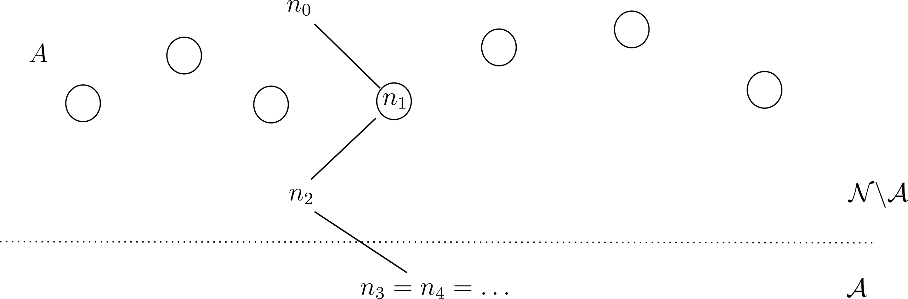
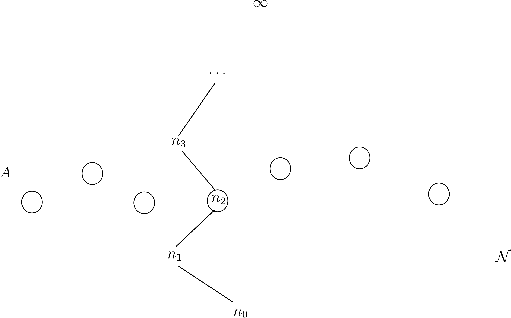

Several results, including Erdős #1196 and the Primitive Set Conjecture, were formalized in Lean 4/Mathlib, generated with OpenAI Codex and Math Inc.'s Gauss.
Abstract
A set of integers is primitive if no number in the set divides another. We introduce a new method for bounding Erdős sums of primitive sets, suggested from output of GPT-5.4 Pro, based on Markov chains with von Mangoldt weights. The method leads to a host of applications, yet seems to have been overlooked by the prior literature since Erdős's seminal 1935 paper. As applications, we prove two 1966 conjectures of Erdős-Sárközy-Szemerédi, on primitive sets of large numbers (#1196) and on divisibility chains (#1217). The method also provides a short proof of the Erdős Primitive Set Conjecture (#164), as well as the related claim that 2 is an ”Erdős-strong” prime. Moreover, the method resolves a revised form of the Banks-Martin conjecture, which has long been viewed as a unifying `master theorem' for the area.
Problem
The goal is to bound Erdős sums f(A)=Σ 1/(a log a) over primitive sets A, sets in which no element divides another. Targets include Erdős–Sárközy–Szemerédi conjectures #1196 and #1217, the Erdős Primitive Set Conjecture #164, and a revised Banks–Martin conjecture.
Approach
The method, suggested by output from GPT-5.4 Pro, builds downward and upward Markov chains on the divisibility poset with transition probabilities given by von Mangoldt weights. A primitive set meets any divisibility chain at most once, so sub-invariance of the weight ν0 under these chains gives bounds through hitting probabilities. The proofs also rely on estimates for sums involving the von Mangoldt function. Parts of the work were formalized in Lean 4 with Mathlib: one formalization by the first author using Codex, and one of the #1196 proof by Math Inc. using Gauss.

Figure 2. A downward divisibility chain that reaches an absorbing state n_{3}\in{\mathcal{A}} . Any primitive set A avoiding the absorbing states {\mathcal{A}} will meet this chain at most once, although the chain could conceivably “jump over” such a set.

Figure 3. An upward divisibility chain, which either reaches the absorbing state \infty in finite time, or is an infinite strictly increasing chain of natural numbers. Any primitive set A will meet such a chain at most once, although the chain could conceivably “jump over” such a set.
Results
The authors prove f(A) ≤ 1+O(1/log x) for primitive sets of numbers ≥ x (#1196), resolve #1217, and give a short proof of the Primitive Set Conjecture. They also show that 2 is Erdős-strong, prove an odd-prime form of Banks–Martin, and reprove an Ahlswede–Khachatrian–Sárközy inequality.